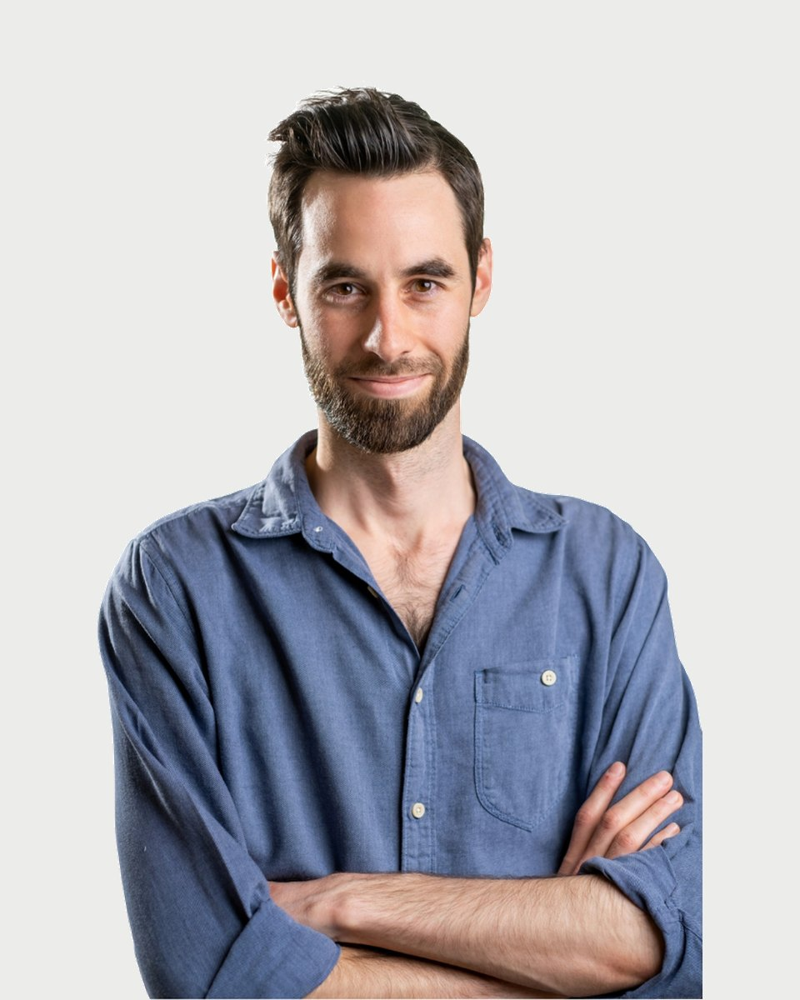

Regiszter 27 · Klinikai szakpszichológus
Péteri Dávid
- Amiben segít
- Elakadás a kamaszkorban, identitás kérdése
- Elveszettség, céltalanság, lehangoltság érzése
- Stresszel való megküzdés, életvezetési nehézségek
- Szorongásos panaszok, pánik
Amiben segítek
Péteri Dávid saját megfogalmazásában. Ha a listában nem találja a saját helyzetét, az első beszélgetésen ezt is megbeszélik.
- Elakadás a kamaszkorban, identitás kérdése
- Elveszettség, céltalanság, lehangoltság érzése
- Stresszel való megküzdés, életvezetési nehézségek
- Szorongásos panaszok, pánik
- Önbizalomhiány, önértékelési problémák
- Elakadás a fiatal felnőttkorban, kapunyitási krízis
- Párkapcsolati elakadás, szakítás/válás, családon belüli konfliktusok
- Váratlan helyzet miatt kialakuló válságok, pl. munkahely elvesztése, betegség, haláleset
- Függőségek
- Önmegvalósítás, erőforrások keresése, kiteljesedés
- Mélyebb önismeret
- Difficulties in adolescence, the topic of identity, identity crisis
Bemutatkozás
Péteri Dávid saját szavaival. Egy alkalom díja 18-25 ezer forint. A díjakról
Eddigi életem során sokat utaztam, melynek köszönhetően szerencsém volt helyiekkel beszélgetni, kultúrájukat, gondolkodásukat megismerni; laktam és dolgoztam Indiában, Brazíliában, nyugat-európai országokban.
Foglalkoztam fiatalokkal, idősekkel, menekültekkel, hajléktalanokkal, pszichiátriai nehézséggel vagy függőséggel élőkkel és hozzátartozóikkal, így megtapasztalhattam és bátran állíthatom, hogy könnyen a másikra hangolódok és hamar ráérzek a másik személy esszenciájára, igényeire, céljaira. Utazásaim alatt számtalanszor más utazók mellé sodort a sors: kis ideig együtt haladtunk tovább, megosztottuk egymással élményeinket, tapasztalatainkat, segítettük a másikat a fejlődésében, növekedésében, majd elbúcsúztunk. Úgy gondolom, a pszichológus és a segítséget kérő is útitársak, akik egy bizonyos időre együtt haladnak útjukon. A segítő irányt mutathat: megértéssel, feltétel nélküli elfogadással, a megfelelő kérdésekkel, visszajelzésekkel támogathatja a segítséget kérőt, aki talán nehézségbe ütközött vagy elakadt az útján; hiszem, hogy kötelessége is őt a legjobb tudása szerint saját működése, motivációi, vágyai mélyebb megértéséhez, elfogadásához vezetni. Ez lesz az az alap, ami segít a helyes döntések meghozatalában, a legnagyobb boldogságot rejtő útirány választásában.
Szeretettel várom Önt is, hogy belevágjunk egy közös utazásba!
Akár élethelyzetünkből, fejlődési útunkból adódóan, akár váratlan események miatt, nehézségek, megoldandó problémák mindig adódhatnak. Van, hogy túl nehéz egyedül szembenéznünk az akadályokkal, az ismétlődő kisebb-nagyobb gondokkal, elfáradtunk, esetleg még a testünk is jelez erről. Úgy gondolom, hogy annak felismerése, hogy támogatásra, segítségre van szükségünk, a változási utunk első lépése. Az önismeret fejlődése, a befeléfordulás egy olyan tanulási folyamat, amelyben megbecsüljük magunkat, törődünk magunkkal.
Minden ember különböző és sajátságosan varázslatos, és hiszem, hogy ott rejlik mindenkiben a kulcs a problémái megértéséhez, a változtatáshoz, változáshoz. Meggyőződésem, hogy a segítséget kérő egyén számára fontos a szabadság, de az elfogadás, megértés, bizalom, támogatás is; így fog tudni ő bátrabban szembenézni saját magával és rálelni erőforrásaira, pozitív tulajdonságaira, melyek mentén fejlődhet.
Hitvallás
Képzés és szakmai út
51 tétel. A képzések és a szupervízió az akkreditált szakképzőhely rendjében folynak. Mit jelent ez Önnek
Iskolai végzettség
Módszerspecifikus képzések
Szakmai tapasztalatok
Education
Trainings, self-knowledge processes
Professional experiences
Rólam mondták
Kliensek visszajelzései, a hozzájárulásukkal, névtelenül.
Kezdetben nagyon tartottam a beszélgetésektől, úgy éreztem, meg kell felelnem, mint ahogy mindenkinek az életben. De Dávid elfogadása, empátiája segített ezen túllendülni: most azt tapasztalom, hogy nemcsak minden beszélgetés után könnyebb vagyok (és van min elgondolkodnom, dolgoznom), de összességében is jobban értem, hogy mit miért csinálok, miért is vagyok olyan, amilyen. Egyre jobban el tudom fogadni és fel tudom vállalni magam.
Most már kevésbé vagyok magányos és lehangolt, hiszen a beszélgetések segítségével összeszedettebb, aktívabb lettem, új céljaim vannak, és az érzéseimet, igényeimet is jobban, asszertívebben ki tudom fejezni.
Dávid volt az első, aki elfogadott olyannak, amilyen vagyok, rámutatott értékeimre, illetve segített ráébredni, hogy bizony nem mindig én vagyok a hibás. Már egyre jobban értem a konfliktusaim eredetét, jellegét, és megtanultam kiállni magamért. Ezek miatt van, hogy a depresszióm sokkal ritkább és elviselhetőbb, és a pániktüneteim elmúltak.
Amikor Dávidhoz kezdtem járni, még nagyon visszahúzódó, bizonytalan voltam, sokat szorongtam, nem szerettem magamat. Ez fél év alatt rengeteget változott: úgy érzem, kinyíltam, és elkezdtem szeretni élni!
Regiszter 27
Időpont Péteri Dávidnél
Az ügyfélszolgálat hétköznap 9 és 15 óra között egyeztet. Ha bizonytalan, hogy Ön kihez tartozik, azt is megbeszélik, és ha kell, más kollégát javasolnak.